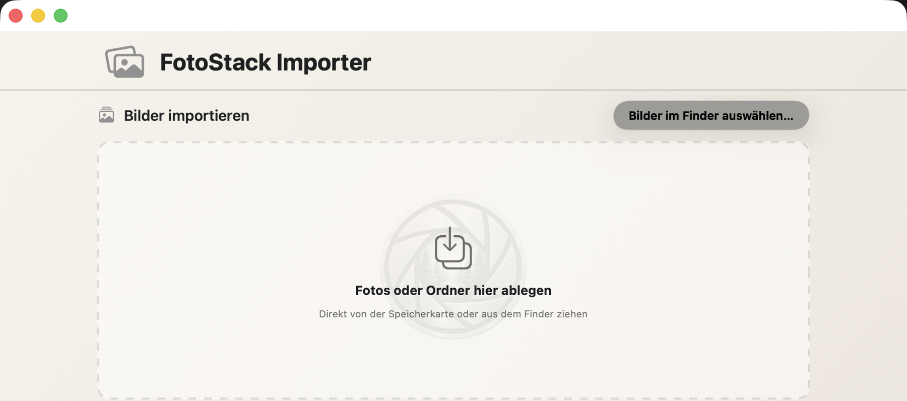

Über dieses Handbuch
Dieses Handbuch erklärt die Arbeit mit dem FotoStack Importer – von der Auswahl der Bilder bis zum sicheren, sortierten Import. Die App richtet sich an Fotografinnen und Fotografen, die Bilder aus unterschiedlichen Quellen ohne vorheriges manuelles Vorsortieren in eine einheitliche Ablage übernehmen möchten.
Die Bezeichnungen von Schaltflächen können sich in späteren Versionen der App geringfügig ändern. Die beschriebenen Arbeitsabläufe bleiben davon unberührt.
Über die App

FotoStack Importer 1.0
Der FotoStack Importer importiert Fotos in einen frei wählbaren Zielordner, liest dabei die Aufnahmedaten aus den Bildinformationen aus und organisiert die Dateien nach ihrem tatsächlichen Aufnahmedatum. Optional erkennt und gruppiert die App Fokusreihen sowie HDR-Belichtungsreihen.
Der FotoStack Importer eignet sich nicht nur für neue Importe von Speicherkarten, sondern auch zum nachträglichen Sortieren bereits vorhandener Fotosammlungen. Da die App die Originaldateien nicht verschiebt, sondern Kopien im Zielordner erstellt, kann eine bestehende Sammlung gefahrlos neu strukturiert werden.
Zu den zentralen Funktionen gehören:
- Import per Drag & Drop von Einzelbildern und Ordnern
- rekursive Suche in Unterordnern
- Sortierung nach EXIF-Aufnahmedatum
- vier wählbare Ordnerstrukturen nach Aufnahmedatum
- Duplikaterkennung über den Dateiinhalt
- Ergänzen unvollständiger vorhandener Fokus- und HDR-Reihen
- Mitnahme und Aktualisierung von Sidecar-Dateien beim Ordner-Import
- Apple-
AAE-Sidecars für bearbeitete Apple-/iPhone-Bilder - Erkennung von Fokusreihen und HDR-Reihen
- Import-Vorschau mit anpassbarer Erkennung vor dem Kopieren
- kurze Hilfetexte direkt an wichtigen Bedienelementen
- frei wählbare Präfixe und Trennzeichen für erzeugte Reihenordner
- auswählbare Erscheinungsbilder und Akzentfarben
- Abbrechen und Rückgängigmachen eines Imports
Wichtige Begriffe
| Begriff | Bedeutung |
|---|---|
| Import | Die App erstellt Kopien im Zielordner. Dateien werden nicht aus der Quelle verschoben. |
| Fokusreihe | Mehrere Aufnahmen desselben Motivs mit schrittweise verändertem Fokuspunkt. |
| Fokus-Stack | Eine von der App erkannte und in einem Ordner zusammengefasste Fokusreihe. |
| HDR-Reihe | Mehrere Aufnahmen desselben Motivs mit unterschiedlichen Belichtungen. |
| Präfix | Frei wählbarer Text am Anfang eines erzeugten Reihenordners, zum Beispiel Makro01. |
| EXIF-Daten | Bildinformationen, unter anderem das Aufnahmedatum und die Aufnahmezeit. |
| Sidecar-Datei | Begleitdatei zu einem Bild, in der Bildbearbeitungsprogramme Einstellungen speichern, zum Beispiel .xmp oder .dop. |
| Tooltip / Hilfe | Kurzer Hilfetext, der erscheint, wenn der Mauszeiger kurz über einem Bedienelement stehen bleibt. |
Sicher importieren
Originaldateien bleiben erhalten
Der FotoStack Importer kopiert die ausgewählten Bilder in den Zielordner. Originaldateien werden weder verändert noch verschoben oder gelöscht. Das gilt auch für Bilder auf Speicherkarten, externen Laufwerken und in Quellordnern auf dem Mac.
Wichtig: Ein Import ersetzt kein eigenes Backup. Bewahre wichtige Originale zusätzlich auf mindestens einem weiteren Speichermedium auf, bevor du eine Speicherkarte formatierst oder Dateien manuell löschst.
Was der Import verändert
Die App erstellt bei Bedarf Ordner und neue Dateikopien ausschließlich im gewählten Zielordner. Die ursprüngliche Struktur des Quellordners wird nicht übernommen; die neue Ablage richtet sich nach der unter Einstellungen › Ordner gewählten Struktur, dem Aufnahmedatum und den aktivierten Erkennungsfunktionen.
Bilder auswählen
Bilder und Ordner per Drag & Drop hinzufügen
Ziehe einzelne Bilder oder ganze Ordner aus dem Finder in das Importfeld der App. Das können neue Bilder von einer Speicherkarte oder bereits vorhandene Fotoordner auf dem Mac oder einem externen Laufwerk sein. Wird ein Ordner hinzugefügt, durchsucht die App ihn nach unterstützten Bilddateien – einschließlich aller enthaltenen Unterordner.
Beispiel einer Quelle:
`text Importordner ├── IMG_001.jpg ├── IMG_002.jpg └── Urlaub ├── IMG_003.jpg └── IMG_004.jpg `
Alle gefundenen Bilder werden berücksichtigt. Du kannst anschließend weitere einzelne Bilder oder Ordner hinzufügen; die App verarbeitet sämtliche Dateien gemeinsam.
`text Importfeld ├── Ordner „Urlaub“ ├── IMG_005.jpg └── Ordner „Makro“ `
Die Reihenfolge, in der Bilder oder Ordner hinzugefügt werden, hat keinen Einfluss auf die spätere Sortierung.
Auswahl über den Finder
Alternativ wählst du über die Schaltfläche „Bilder im Finder auswählen …“ einzelne Bilder oder Ordner aus. Auch diese Auswahl kann mit später hinzugefügten Dateien und Ordnern kombiniert werden.
Automatische Erkennung im Hauptfenster
Unter „Automatische Erkennung“ zeigt das Hauptfenster je eine kompakte Karte für Fokusreihen und HDR-Reihen. Dort kannst du beide Erkennungen direkt ein- oder ausschalten. Eine kurze Zusammenfassung nennt die aktuell verwendete Mindestbildzahl beziehungsweise die erlaubten HDR-Reihengrößen sowie den maximalen Zeitabstand.
Über „Erweiterte Fokus-Einstellungen“ und „Erweiterte HDR-Einstellungen“ blendest du bei Bedarf die zugehörigen Regler und Eingabefelder ein. Die Bereiche sind beim Start eingeklappt, damit die häufigsten Arbeitsschritte im Hauptfenster übersichtlich bleiben. Alle Werte stehen zusätzlich in der Import-Vorschau zur Verfügung und können dort für den unmittelbar folgenden Import angepasst werden.
Import durchführen
1. Füge Bilder und/oder Ordner zum Importfeld hinzu. 2. Lege den Zielordner fest. 3. Wähle bei Bedarf unter Einstellungen › Ordner die gewünschte Ordnerstruktur. Ohne Änderung verwendet die App Jahr → Aufnahmedatum. 4. Aktiviere bei Bedarf unter „Automatische Erkennung“ die Fokusreihen- und/oder HDR-Erkennung. Weitere Werte kannst du über die aufklappbaren erweiterten Einstellungen oder später in der Import-Vorschau anpassen. 5. Klicke optional auf „Vorschau“, um die geplante Ordnerstruktur vor dem Kopieren zu prüfen. 6. Klicke auf „Importieren & Sortieren“ oder starte den Import aus der Vorschau.
Während des Imports liest die App die Bildinformationen aus, prüft Duplikate, erkennt optional Reihen, erstellt die Zielstruktur und kopiert die Bilder dorthin. Der Fortschritt wird in der App angezeigt.
Import-Vorschau
Die Import-Vorschau zeigt vor dem Kopieren, wie die App die ausgewählten Bilder nach der Duplikatprüfung einordnen würde. Dabei werden noch keine Dateien in den Zielordner kopiert und keine neuen Reihenordner angelegt.
Die Vorschau enthält unter anderem:
- Anzahl neuer Dateien
- erkannte Duplikate
- Anzahl der Aufnahmetage
- erkannte Fokusreihen
- erkannte HDR-Reihen
- vollständig vorhandene Reihen, die übersprungen werden
- vorhandene Reihen, die nur um fehlende Bilder ergänzt werden
- Sicherheitshinweise zu erkannten Fokusreihen, sofern verfügbar
- Motivdistanz-Auswertung für den Nahbereichsfilter
- Dateien ohne lesbares Aufnahmedatum
- geschätzter Speicherbedarf und freier Speicher im Zielordner
- geplante Sidecar-Ergänzungen oder Sidecar-Aktualisierungen
- Hinweise auf Dateien, die im Zielordner unter anderem Namen vorhanden sind
- geplante Ordnerstruktur
Wenn alle lesbaren Dateien bereits im Zielordner vorhanden sind, zeigt die Vorschau dies als eigenen Zustand an. In diesem Fall werden keine Dateien kopiert, keine neuen Ordner angelegt und keine Ordnernummern verbraucht. Der Hauptbutton wird dann zu „Duplikate anzeigen (Anzahl)“ und öffnet die Duplikatübersicht, ohne die Vorschau zu schließen oder einen Import zu starten.
Wenn neue Dateien und Duplikate gemeinsam vorhanden sind, bleibt der Hauptbutton „Import starten“. Zusätzlich erscheint „Duplikate (Anzahl)“, damit die bereits vorhandenen Dateien direkt aus der Vorschau geprüft werden können.
Erkennung für diesen Import anpassen
In der Vorschau kannst du die Erkennung für den aktuellen Import anpassen. Änderungen an Fokusreihen, HDR-Reihen, Zeitabständen, Mindestanzahl und HDR-Reihengrößen wirken auf die angezeigte Vorschau und auf den Import, wenn du anschließend „Import starten“ wählst. Diese Werte ändern die gespeicherten Grundwerte in den Einstellungen nicht automatisch.
Wenn Fokusreihen aktiviert sind, kannst du den maximalen Aufnahmeabstand für Fokusreihen mit einem Schieberegler anpassen. Der Bereich reicht von 0,1 s bis 10,0 s in Schritten von 0,1 s. Bilder, deren Abstand zur vorherigen Aufnahme kleiner oder gleich diesem Wert ist, werden als zusammenhängende Reihe betrachtet. Zusätzlich kannst du festlegen, aus wie vielen Bildern eine Gruppe mindestens bestehen muss, damit sie als Fokus-Stack angelegt wird.
Wenn HDR aktiviert ist, kannst du den maximalen Zeitabstand zwischen HDR-Aufnahmen ebenfalls mit einem Schieberegler anpassen. Der Bereich reicht von 0,1 s bis 10,0 s in Schritten von 0,1 s. Zusätzlich kannst du für diesen Import auswählen, welche HDR-Reihengrößen geprüft werden sollen: 2, 3, 5, 7 oder 9 Bilder. Mehrere Größen können gleichzeitig aktiv sein. Ob eine Gruppe tatsächlich als HDR-Reihe gilt, entscheidet die App zusätzlich anhand der EXIF-Belichtungsdaten.
Zusätzlich kannst du in der Vorschau Fokusreihen berücksichtigen und HDR-Reihen berücksichtigen ein- oder ausschalten. Dadurch lässt sich schnell prüfen, wie sich die Ordnerstruktur verändert, wenn eine Erkennung für diesen Import nicht verwendet wird.
Änderst du während einer geöffneten Vorschau in den Einstellungen das Präfix oder das Trennzeichen für Reihenordner, berechnet die App die Vorschau automatisch neu.
Mit „Zielordner öffnen“ kannst du festlegen, ob der Zielordner nach Abschluss dieses Imports automatisch im Finder geöffnet wird. Wenn ausschließlich Duplikate gefunden wurden und deshalb kein Import stattfindet, wird diese Option in der Vorschau nicht angeboten.
Wenn Sidecar-Aktualisierungen gefunden wurden, erscheint in der Vorschau der Schalter „Quell-Sidecars übernehmen“. Er ersetzt ältere Sidecars im Zielordner durch neuere Sidecars aus der Quelle. Diese Einstellung wird dauerhaft gespeichert und ist mit Einstellungen › Sidecars verbunden. Schaltest du sie in den Einstellungen oder in der Vorschau um, übernimmt die andere Ansicht den Wert ebenfalls.
Import aus der Vorschau starten
Mit „Import starten“ übernimmt die App genau den aktuell angezeigten Vorschau-Plan und kopiert nur die darin als neu, fehlend oder als Sidecar-Arbeit markierten Dateien in den Zielordner. Mit „Abbrechen“ schließt du die Vorschau, ohne Dateien zu kopieren.
Wenn ausschließlich Duplikate gefunden wurden, erscheint statt „Import starten“ der Button „Duplikate anzeigen (Anzahl)“. Dieser öffnet nur die Duplikatübersicht. Es wird kein Import gestartet und die Import-Vorschau bleibt geöffnet.
Wenn du in der Duplikatübersicht eine Datei erneut importierst oder eine vorhandene Datei auf den Quellnamen umbenennst, aktualisiert die App die Vorschau danach neu. Dadurch verschwinden Hinweise, die durch die Änderung nicht mehr zutreffen.
Reicht der freie Speicher im Zielordner nicht aus, kann der Import nicht gestartet werden. Die App zeigt den geschätzten benötigten Speicher und den verfügbaren Speicherplatz an.
Standard-Import und Ordnerstruktur
Sind Fokusreihen- und HDR-Erkennung deaktiviert, erfolgt ein klassischer Fotoimport. Einzelbilder und normale Serienbilder werden anhand ihres Aufnahmedatums sortiert.
Unter Einstellungen › Ordner stehen vier Strukturen zur Auswahl. Die Einstellung wird gespeichert und gilt für Einzelbilder, Fokusreihen und HDR-Reihen.
Jahres-, Monats- und Tagesordner werden im Datumsformat nach ISO 8601 benannt: Jahr 2026, Monat 2026-05 und Tag 2026-05-25. Die Reihenfolge Jahr-Monat-Tag ist eindeutig und sorgt dafür, dass die Ordner alphabetisch zugleich chronologisch sortiert werden.
Jahr → Aufnahmedatum
Dies ist die Standardeinstellung und entspricht der bisherigen Ablage:
`text Zielordner └── 2026 └── 2026-05-25 ├── IMG_001.jpg ├── IMG_002.jpg └── IMG_003.jpg `
Jahr → Monat → Aufnahmedatum
`text Zielordner └── 2026 └── 2026-05 └── 2026-05-25 └── IMG_001.jpg `
Diese Variante eignet sich für große, chronologisch organisierte Sammlungen, bei denen eine zusätzliche Monatsebene gewünscht ist.
Der Monatsordner enthält bewusst das Jahr im Namen, zum Beispiel 2026-05, damit der Ordner auch außerhalb seines Jahresordners eindeutig bleibt.
Nur Aufnahmedatum
`text Zielordner └── 2026-05-25 └── IMG_001.jpg `
Diese Variante ist praktisch, wenn der gewählte Zielordner bereits zu einem Jahr oder Projekt gehört.
Keine Unterordner
`text Zielordner └── IMG_001.jpg `
Einzelbilder werden direkt im gewählten Zielordner abgelegt. Erkannte Fokus- und HDR-Reihen erhalten weiterhin eigene Reihenordner. Da alle Aufnahmetage denselben Zielordner verwenden, setzt die App die Nummerierung der Reihen über die Tage hinweg fort. Mit dem Standard-Trennzeichen Ohne entstehen beispielsweise Fokusreihe01, Fokusreihe02 und HDR01, ohne dass gleichnamige Ordner für verschiedene Tage geplant werden.
Fehlende Zwischenordner legt die App automatisch an. Die Import-Vorschau zeigt vor dem Kopieren die Struktur, die sich aus der aktuell gespeicherten Auswahl ergibt.
Präfixe und Ordnernamen
Für Fokus-Stacks und HDR-Reihen kannst du eigene Präfixe festlegen. Das Präfix ist nur der Text vor der Nummer, zum Beispiel Fokusreihe, HDR oder Makro. Das Trennzeichen zwischen Präfix und Nummer legst du separat unter Einstellungen › Ordner fest.
| Präfix | Trennzeichen | Ergebnis |
|---|---|---|
Makro | Ohne | Makro01 |
Makro | Leerzeichen | Makro 01 |
Makro | Unterstrich | Makro_01 |
HDR Landschaft | Bindestrich | HDR Landschaft-01 |
Der Standard ist Ohne. Dadurch entstehen Namen wie Fokusreihe01 und HDR01. Der ausgegraute Text in einem Eingabefeld ist nur ein Beispiel und wird nicht automatisch übernommen. Bleibt das Präfixfeld leer, besteht der erzeugte Reihenordner nur aus der Nummer, zum Beispiel 01.
Der Präfix wird nur für neu erzeugte Reihenordner verwendet. Wenn eine bereits vorhandene Reihe anhand von Duplikaten eindeutig wiedererkannt wird, verwendet die App den vorhandenen Ordner weiter, auch wenn der Präfix inzwischen geändert wurde. Beispiel: Liegen vier von fünf Bildern bereits in HDR04 und der aktuelle Präfix lautet Belichtungsreihe, wird das fehlende Bild in HDR04 ergänzt.
Duplikaterkennung
Zur Erkennung von Duplikaten erstellt die App für jede Bilddatei einen digitalen Fingerabdruck (Hash-Wert). Aus Performancegründen nutzt die App dafür eine schnelle Inhaltsprüfung der Bilddatei. Der Dateiname oder der Speicherort spielen dabei keine Rolle – eine umbenannte oder in einen anderen Ordner verschobene Datei wird weiterhin als Duplikat erkannt.
Dadurch wird ein Bild auch dann als bereits vorhanden erkannt, wenn es zwischenzeitlich umbenannt wurde:
`text Erster Import: Urlaub_Schweden.CR3 Späterer Import: IMG_5421.CR3
Gleicher Dateiinhalt → bereits importiert → kein erneuter Import `
Bereits kleinste Änderungen am Dateiinhalt – etwa eine Bildbearbeitung, das erneute Speichern als JPEG oder Änderungen an den Metadaten, zum Beispiel EXIF oder IPTC – führen zu einem anderen Hash-Wert. Solche Dateien werden daher als neue Bilder behandelt und nicht als Duplikate erkannt.
Die Duplikaterkennung hilft, doppelte Kopien im Zielordner zu vermeiden. Sie ist keine Bildähnlichkeitssuche: Zwei unterschiedliche Dateien mit ähnlichem Motiv gelten weiterhin als unterschiedliche Bilder.
Bei automatisch erkannten Reihen nutzt die App die Duplikatprüfung auch zur Zuordnung vorhandener Reihenordner. Liegen alle bereits vorhandenen Bilder einer erkannten Fokus- oder HDR-Reihe eindeutig im selben Zielordner, wird dieser Ordner wiederverwendet. Das verhindert leere neue Ordner wie Fokusreihe12, wenn dieselbe Reihe bereits vollständig vorhanden ist.
Ist eine vorhandene Reihe unvollständig, ergänzt die App nur die fehlenden Bilder im vorhandenen Reihenordner. Beispiel: Liegen 69 von 70 Bildern bereits in Fokusreihe11, wird nur das fehlende Bild nach Fokusreihe11 kopiert. Es wird kein neuer Ordner Fokusreihe12 angelegt und keine neue Nummer verbraucht.
Sind Duplikate derselben erkannten Reihe auf mehrere Zielordner verteilt, führt die App diese Ordner nicht automatisch zusammen. Solche Fälle werden als nicht eindeutig behandelt. Vorhandene Dateien werden dabei nicht verschoben, umbenannt, gelöscht oder überschrieben.
Wenn in der Import-Vorschau oder nach dem Import Duplikate gefunden wurden, kannst du über „Duplikate anzeigen“ prüfen, welche Quelldatei zu welcher bereits vorhandenen Datei im Zielordner gehört. Wenn ausschließlich Duplikate gefunden wurden, erscheint diese Aktion direkt als Hauptbutton der Vorschau. Bei gemischten Importen ist die Duplikatanzahl in der Zusammenfassung anklickbar. Die Ansicht öffnet bewusst nur die vorhandene Zieldatei im Finder; der Quellordner wird aus Sicherheitsgründen nicht aktiv geöffnet.
Die Duplikatansicht trennt die Treffer in zwei Bereiche. Unter „Umbenannte Duplikate“ stehen Dateien mit identischem Inhalt, aber unterschiedlichem Dateinamen. Unter „Gleicher Dateiname“ stehen Dateien, die bereits unter demselben Namen vorhanden sind. Gibt es im Zielordner mehrere identische Treffer, bevorzugt die App für die Anzeige den Treffer mit gleichem Dateinamen.
Fehlt eine zuvor vorhandene Zieldatei, zeigt die Duplikatansicht „Fehlt im Ziel“ und bietet „Erneut importieren“ an. Dadurch wird die Quelldatei wieder an den ursprünglichen Zielpfad kopiert. Unterscheiden sich Quelle und vorhandene Zieldatei nur im Dateinamen, kann die vorhandene Datei im Zielordner mit „Auf Quellnamen umbenennen“ auf den Quellnamen umbenannt werden. Der Dateiinhalt bleibt dabei unverändert. Nach erfolgreichem Umbenennen wandert der Eintrag in den Bereich „Gleicher Dateiname“. Ist der Quellname im Zielordner bereits belegt, zeigt die App einen entsprechenden Hinweis und bietet das Umbenennen nicht an. Beim Schließen der Duplikatansicht wird die Vorschau neu berechnet, wenn eine solche Aktion etwas am Zielordner geändert hat.
Sidecar-Dateien bei Ordner-Importen
Sidecar-Dateien sind Begleitdateien zu Bildern. Sie enthalten keine neue Bilddatei, sondern Bearbeitungseinstellungen oder Zusatzinformationen aus Programmen wie DxO PhotoLab, Adobe Lightroom, Capture One, ON1 oder RawTherapee. Typische Namen sind zum Beispiel:
`text R6_01611.CR3 R6_01611.CR3.dop R6_01611.xmp R6_01611.aae `
Diese Funktion ist vor allem für das nachträgliche Sortieren bereits vorhandener Ordner gedacht, etwa wenn ein chaotischer Fotoordner in eine strukturierte Ablage nach Aufnahmedatum überführt werden soll. Beim klassischen Import direkt von einer Speicherkarte kommen Sidecar-Dateien oft gar nicht vor oder entstehen erst später durch die Bildbearbeitung.
Beim Import sucht die App im Quellordner neben jedem Bild nach passenden Sidecar-Dateien. Unterstützt werden derzeit .aae, .dop, .xmp, .pp3, .on1, .cos und .rwlsettings. Die Groß- und Kleinschreibung der Endung spielt keine Rolle.
Die App erkennt zwei übliche Namensmuster:
`text R6_01611.xmp R6_01611.CR3.dop R6_01611.aae `
Wird das Bild neu importiert, werden passende Sidecar-Dateien in denselben Zielordner kopiert. Wird das Bild wegen eines Namenskonflikts umbenannt, passt die App den Sidecar-Namen entsprechend an.
Wird das Bild selbst als Duplikat erkannt, kopiert die App das Bild nicht erneut. Ein passendes Sidecar wird trotzdem geprüft: Fehlt es im Zielordner, wird es kopiert. Ist es im Zielordner bereits vorhanden, wird es nur ersetzt, wenn die Sidecar-Datei aus der Quelle neuer ist und „Quell-Sidecars übernehmen“ aktiv ist. So können aktuelle Bearbeitungen übernommen werden, ohne identische Bilddateien doppelt abzulegen.
Ist „Quell-Sidecars übernehmen“ ausgeschaltet, werden fehlende Sidecars weiterhin ergänzt. Bereits vorhandene Sidecars im Zielordner werden dann aber nicht durch neuere Quelldateien ersetzt.
Wenn ein vorhandenes Sidecar ersetzt wird und Backups aktiviert sind, legt die App im jeweiligen Zielordner einen sichtbaren Backup-Ordner an. Der Standardname lautet FotoStackImporter – Vorherige Sidecars; du kannst ihn in den Einstellungen unter Sidecars ändern. Darin liegt pro Sidecar-Datei höchstens ein Backup mit dem Originalnamen:
`text 2026 └── 2026-08-06 ├── R6_01611.CR3 ├── R6_01611.CR3.dop └── FotoStackImporter – Vorherige Sidecars └── R6_01611.CR3.dop `
Bei einer späteren erneuten Aktualisierung derselben Sidecar-Datei wird dieses Backup ersetzt. Es enthält also immer die Version, die direkt vor der letzten Aktualisierung im Zielordner lag.
Nach dem Import zeigt die Zusammenfassung an, ob Sidecar-Dateien kopiert oder aktualisiert wurden. Mit „Rückgängig machen“ werden neu kopierte Sidecar-Dateien entfernt und ersetzte Sidecar-Dateien aus dem Backup wiederhergestellt, solange der Import-Log noch verfügbar ist.
Wenn der Dateiname des vorhandenen Bildes im Zielordner vom Dateinamen der Quelle abweicht, passt die App den Sidecar-Namen an den Zielnamen an. Beispiel: Die Quelle heißt Original.CR3, im Ziel liegt derselbe Bildinhalt als Renamed.CR3. Ein Sidecar Original.xmp wird dann als Renamed.xmp ergänzt.
Die App sucht Sidecars im selben Quellordner wie das Bild. Sidecars in separaten Unterordnern werden nicht automatisch zugeordnet.
Für gute Ergebnisse vorbereiten
Die App kann Reihen anhand zeitlicher Zusammenhänge erkennen. Eine gut vorbereitete Aufnahme erleichtert diese Zuordnung.
Beim ersten Start zeigt die App einen kurzen Einrichtungsassistenten. Er fasst die wichtigsten Vorbereitungsschritte zusammen, lässt dich einen Foto-Basisordner freigeben und die bevorzugte Ordnerstruktur auswählen. Anschließend fragt er optional bis zu drei Festbrennweiten für den Fokusfilter ab. Basisordner und Ordnerstruktur können später jederzeit unter Einstellungen › Ordner geändert werden.
Der Foto-Basisordner ist der übergeordnete Bereich, in dem deine Fotoquellen und Foto-Projekte liegen. Nach der einmaligen Auswahl merkt sich die App die von macOS erteilte Berechtigung. Unterordner innerhalb dieses Bereichs können danach ohne erneute Freigabe verwendet werden. Quellen oder Ziele außerhalb des Basisordners lassen sich weiterhin über den Finder oder per Drag & Drop auswählen; externe Laufwerke benötigen eine eigene Freigabe.
- Verwende für HDR die automatische Belichtungsreihe (AEB) deiner Kamera.
- Verwende für Fokusreihen die Fokus-Bracketing-Funktion deiner Kamera.
- Speichere normale Serienbilder nach Möglichkeit getrennt von Fokus- und HDR-Aufnahmen.
- Nutze bei Kameras mit zwei Kartensteckplätzen bei Bedarf eine Karte für Einzel- und Serienbilder, die andere für Reihenaufnahmen.
Wenn nur eine Speicherkarte verfügbar ist, können separate Kameraordner ebenfalls helfen.
Fokusreihen erkennen
Eine Fokusreihe besteht aus mehreren Bildern desselben Motivs, bei denen der Fokuspunkt von Aufnahme zu Aufnahme verändert wird. Die App erkennt zusammenhängende Aufnahmen anhand des eingestellten zeitlichen Abstands und fasst sie als Fokus-Stack zusammen, wenn die eingestellte Mindestanzahl an Bildern erreicht ist. Die Anzahl der Bilder einer Fokusreihe ist nach oben nicht begrenzt.
Entscheidend ist der Abstand zwischen zwei aufeinanderfolgenden Bildern. Ist dieser Abstand kleiner oder gleich dem eingestellten Wert, bleiben die Bilder in derselben Fokusreihe. Der einstellbare Bereich reicht von 0,1 s bis 10,0 s. Mit „Mindestanzahl Bilder“ legst du fest, ab welcher Gruppengröße ein Fokus-Stack entsteht. Kleinere zeitlich zusammenhängende Gruppen werden als Einzelbilder einsortiert. Eine zusätzliche Mindestzeit oder eine feste Obergrenze für die Bildanzahl gibt es nicht.
Sofern verfügbar, berücksichtigt die App zusätzliche Bild- und Kamerainformationen, um Fokusreihen zuverlässiger von gewöhnlichen Serienaufnahmen zu unterscheiden. Wenn eine Kamera eine Fokusreihe eindeutig kennzeichnet, kann die Vorschau dies zum Beispiel als „Fokusreihe - durch Kamera bestätigt“ anzeigen. Fehlende Zusatzinformationen führen nicht automatisch zur Ablehnung, da ihre Verfügbarkeit vom Kameramodell, Dateiformat und der macOS-Unterstützung abhängt.
Optional kannst du den Nahbereichsfilter aktivieren. Dann verwendet die App zusätzlich die EXIF-Motivdistanz, sofern die Kamera diesen Wert speichert. Nur Aufnahmen bis zur eingestellten Maximaldistanz werden als Fokusreihe akzeptiert. Fehlt die Motivdistanz in den EXIF-Daten, bleibt die normale Zeit-Erkennung aktiv, damit Kameras ohne diesen Metadatenwert weiterhin funktionieren.
In der Import-Vorschau zeigt die App nach der Analyse an, für wie viele Bilder eine Motivdistanz gefunden wurde und bei wie vielen Bildern dieser Wert fehlt. Eine Meldung wie Motivdistanz: 42 Bild(er) gefunden, 45 ohne Wert. bedeutet: Der Nahbereichsfilter kann nur bei den 42 Bildern mit auslesbarer Distanz mitentscheiden. Bei den übrigen Bildern greift weiterhin die normale Zeit-Erkennung.
In den App-Einstellungen kannst du unter Fokusfilter bis zu drei Festbrennweiten hinterlegen und einzeln aktivieren, zum Beispiel 50 mm, 100 mm oder 180 mm. Sobald mindestens eine Brennweite aktiv ist, berücksichtigt die Fokusreihen-Erkennung nur Bilder, deren EXIF-Brennweite zu einer aktivierten Festbrennweite passt. Aktiviere nur die Objektive, die für den jeweiligen Arbeitsablauf wirklich verwendet werden, damit die Stapelung möglichst stark eingegrenzt wird. Diese Eingrenzung ist vor allem für Festbrennweiten gedacht; bei Zoomobjektiven kann die Brennweite zwischen Aufnahmen wechseln.
Die Vorschau kann erkannte Fokusreihen zurückhaltend kennzeichnen:
- Fokusreihe - durch Kamera bestätigt: Die Kamera-Metadaten enthalten einen eindeutigen Hinweis auf Focus Bracketing oder Focus Stacking.
- Fokusreihe - hohe Plausibilität: Mehrere verfügbare Bild- und Kamerainformationen sprechen für eine Fokusreihe.
- Fokusreihe: Die Grundkriterien sind erfüllt und die Reihe wirkt plausibel.
- Mögliche Fokusreihe: Die Grundkriterien sind erfüllt, aber die Abgrenzung zu einer normalen schnellen Serienaufnahme ist unsicher.
`text 2026 └── 2026-05-25 └── Fokusreihe01 ├── IMG_001.jpg ├── IMG_002.jpg └── IMG_020.jpg `
Hinweis zu Serienbildern
Sport-, Tier- und Actionaufnahmen entstehen ebenfalls in kurzen Zeitabständen. Bei aktivierter Fokusreihen-Erkennung können sie deshalb wie eine Fokusreihe wirken und als Fokus-Stack gruppiert werden. Sofern verfügbar, nutzt die App zusätzliche Bildinformationen zur besseren Einordnung; eine vollkommen sichere Unterscheidung ist jedoch nicht bei jeder Kamera und Aufnahmesituation möglich.
Für solche Aufnahmen empfiehlt es sich weiterhin, die Erkennung vor dem Import zu deaktivieren, die Vorschau zu prüfen oder die Bilder getrennt zu importieren.
HDR-Reihen erkennen
Eine HDR-Reihe enthält mehrere Aufnahmen desselben Motivs mit unterschiedlichen Belichtungen. Lege in der App fest, welche HDR-Reihengrößen geprüft werden sollen, zum Beispiel 3, 5, 7 und 9 Bilder.
Damit normale Serienaufnahmen nicht allein wegen kurzer Aufnahmeabstände als HDR einsortiert werden, berücksichtigt die App neben Bildanzahl und Aufnahmeabstand die verfügbaren Belichtungsinformationen. Nur eine plausible Belichtungsreihe wird als HDR-Reihe in einem eigenen Ordner abgelegt:
`text HDR01 ├── IMG_001.jpg ├── IMG_002.jpg └── IMG_003.jpg `
Die zuverlässigsten Ergebnisse erhältst du mit der AEB-Funktion deiner Kamera. Die Reihenfolge der helleren und dunkleren Aufnahmen spielt dabei keine Rolle. Für eine zuverlässige Erkennung sollten die Belichtungsinformationen lesbar und die Blende innerhalb der Reihe konstant sein, da unterschiedliche Blenden die Schärfentiefe verändern können.
Für HDR gilt der eingestellte Zeitabstand zwischen HDR-Aufnahmen. Die Abstände innerhalb der Reihe müssen kleiner oder gleich diesem Wert sein. Der einstellbare Bereich reicht von 0,1 s bis 10,0 s.
Die App kann innerhalb derselben Fotosession unterschiedliche HDR-Reihengrößen erkennen. Unterstützt werden 2, 3, 5, 7 und 9 Bilder. Standardmäßig sind 3, 5, 7 und 9 aktiviert; 2 Bilder kann zusätzlich aktiviert werden. Zweierreihen können schwerer von normalen Bildpaaren zu unterscheiden sein, deshalb bleiben die EXIF-Belichtungsprüfungen auch hier entscheidend.
In den App-Einstellungen legst du unter HDR die dauerhaften Standardgrößen für neue Importsitzungen fest. Im Hauptfenster und in der Import-Vorschau kannst du die Auswahl für den aktuellen Import vorübergehend ändern, ohne die gespeicherten Standards zu überschreiben.
HDR und Fokusreihen kombinieren
Wenn beide Funktionen aktiv sind, ordnet die App zusammengehörende Aufnahmen anhand der gewählten Einstellungen und der verfügbaren Bildinformationen ein. Eine plausible HDR-Belichtungsreihe wird als HDR-Reihe behandelt; andernfalls kann eine passende Gruppe als Fokus-Stack eingeordnet werden.
Beispiel:
`text 2026-05-25 ├── IMG_001.jpg ← Einzelbild ├── HDR01 ← 3 Bilder, aktivierte HDR-Größen enthalten 3 │ ├── IMG_002.jpg │ ├── IMG_003.jpg │ └── IMG_004.jpg └── Fokusreihe01 ← 18 Bilder ├── IMG_005.jpg └── … `
Prüfe bei gemischten Aufnahmesituationen nach dem Import stichprobenartig die Zuordnung. Falls nötig, importiere unterschiedliche Aufnahmearten getrennt.
Nutze bei gemischten Aufnahmen die Import-Vorschau, um Fokus- und HDR-Erkennung für diesen Import testweise ein- oder auszuschalten und die geplante Ordnerstruktur vor dem Kopieren zu prüfen.
Import abbrechen oder rückgängig machen
Während eines laufenden Imports wird die Schaltfläche „Importieren & Sortieren“ zu „Abbrechen“. Nach dem Abbruch zeigt die App eine Sicherheitsabfrage mit folgenden Möglichkeiten:
Behalten
Der Import wird gestoppt. Bereits kopierte Dateien im Zielordner bleiben erhalten.
Löschen
Der Import wird gestoppt und die während dieses Importvorgangs bereits kopierten Dateien im Zielordner werden entfernt.
Wichtig: Gelöscht werden ausschließlich die von diesem Import erstellten Kopien im Zielordner. Die Originaldateien auf Speicherkarte, externem Laufwerk oder im Quellordner bleiben unverändert.
Fortsetzen
Der laufende Import wird fortgeführt und die verbleibenden Bilder werden weiter verarbeitet.
Nach einem abgebrochenen Import kann die Funktion „Rückgängig machen“ verwendet werden, um den letzten Importvorgang erneut zurückzusetzen.
Wenn du in der Import-Vorschau „Zielordner öffnen“ aktivierst, öffnet die App den Zielordner nach erfolgreichem Import automatisch im Finder. Wenn ausschließlich Duplikate gefunden wurden, wird kein Import gestartet und diese Option nicht angeboten.
Einstellungen
Das Einstellungsfenster lässt sich über FotoStack Importer › Einstellungen … oder mit ⌘, öffnen. Es enthält die Registerkarten Fokusfilter, HDR, Ordner, Sidecars und Darstellung. Änderungen werden unmittelbar übernommen und dauerhaft gespeichert.
Fokusfilter
Unter Festbrennweiten für Fokusreihen stehen drei Einträge Objektiv 1, Objektiv 2 und Objektiv 3 zur Verfügung. Das Kontrollkästchen vor einem Objektiv aktiviert den jeweiligen Filter; im zugehörigen Zahlenfeld wird die Brennweite in Millimetern eingetragen. Das Zahlenfeld ist nur bei aktiviertem Objektiv verfügbar.
Sobald mindestens ein Objektiv aktiviert ist, berücksichtigt die Fokusreihen-Erkennung nur Bilder, deren EXIF-Brennweite einer der aktivierten Brennweiten entspricht. Bilder ohne passende Brennweite werden nicht als Fokusreihe eingeordnet. Daher sollten nur Festbrennweiten aktiviert werden, die im jeweiligen Arbeitsablauf tatsächlich verwendet werden. Bei Zoomobjektiven kann sich die Brennweite zwischen Aufnahmen ändern; dafür ist dieser Filter nicht vorgesehen.
Mit „Einrichtungsassistent erneut öffnen“ wird der Assistent noch einmal gestartet. Dort lassen sich die Hinweise zur Vorbereitung erneut durchgehen sowie Foto-Basisordner, Ordnerstruktur und Festbrennweiten prüfen oder ändern.
HDR
Die Kontrollkästchen 2 Bilder, 3 Bilder, 5 Bilder, 7 Bilder und 9 Bilder legen fest, welche Bildanzahlen als mögliche automatische HDR-Belichtungsreihen erkannt werden. Mehrere Größen können gleichzeitig aktiv sein. Mindestens eine Größe bleibt immer ausgewählt. Standardmäßig sind 3, 5, 7 und 9 Bilder aktiviert; Zweierreihen sind optional und können schwerer von normalen Bildpaaren zu unterscheiden sein.
Diese Auswahl ist der dauerhaft gespeicherte Standard für neue Importsitzungen. Änderungen an den HDR-Größen im Hauptfenster oder in der Import-Vorschau gelten nur für den aktuellen Import und überschreiben diesen Standard nicht.
Ordner
Unter Foto-Basisordner wird der aktuell freigegebene übergeordnete Fotoordner angezeigt. Mit „Auswählen …“ wird er eingerichtet, mit „Ändern …“ lässt sich ein anderer Ordner wählen. Die App speichert die von macOS erteilte Zugriffsberechtigung als geschütztes Lesezeichen. Unterordner dieses Basisordners können danach ohne erneute Freigabe als Quelle oder Ziel verwendet werden. Wird der Ordner verschoben oder gelöscht oder ist die Berechtigung nicht mehr gültig, muss er erneut ausgewählt werden.
Das Auswahlfeld Struktur im Zielordner bestimmt, welche datumsbezogenen Unterordner die App im gewählten Zielordner anlegt:
- Jahr → Aufnahmedatum erzeugt
JJJJ/JJJJ-MM-TTund ist die Standardeinstellung. - Jahr → Monat → Aufnahmedatum ergänzt einen Monatsordner
JJJJ-MM. - Nur Aufnahmedatum erzeugt nur den Tagesordner
JJJJ-MM-TT. - Keine Unterordner legt Einzelbilder direkt im Zielordner ab; erkannte Fokus- und HDR-Reihen behalten eigene Reihenordner.
Das Auswahlfeld Trennzeichen legt das Zeichen zwischen Präfix und laufender Nummer eines Fokus- oder HDR-Reihenordners fest. Zur Auswahl stehen Ohne, Leerzeichen, Unterstrich und Bindestrich. Daraus entstehen beispielsweise HDR01, HDR 01, HDR_01 oder HDR-01.
Unter Beispiel zeigt die App den vollständigen resultierenden Pfad. Die Struktur gilt für Einzelbilder, Fokusreihen und HDR-Reihen. Die Duplikaterkennung findet bereits vorhandene Bilder unabhängig von der aktuell gewählten Struktur.
Sidecars
Der Schalter „Quell-Sidecars übernehmen“ erlaubt, ein vorhandenes Sidecar im Ziel durch eine neuere Version aus der Quelle zu ersetzen. Ist der Schalter aus, werden fehlende Sidecars weiterhin ergänzt, vorhandene Ziel-Sidecars jedoch nicht ersetzt. Diese Einstellung wird mit dem gleichnamigen Schalter in der Import-Vorschau synchron gehalten.
Mit „Backups beim Überschreiben aktivieren“ wird vor dem Ersetzen eines vorhandenen Ziel-Sidecars eine Sicherheitskopie angelegt. Das Feld Backup-Ordnername bestimmt den Namen des dafür verwendeten Unterordners und ist nur bei aktiviertem Backup-Schalter verfügbar. Der Standardname lautet FotoStackImporter – Vorherige Sidecars. Der Ordner wird nur verwendet, wenn tatsächlich ein vorhandenes Sidecar durch eine neuere Version ersetzt wird.
Darstellung
Das Auswahlfeld Erscheinungsbild bietet Espresso, Graphit, Warm hell und Nebel hell. Espresso und Graphit sind dunkle, Warm hell und Nebel hell sind helle Erscheinungsbilder. Espresso ist die Standardeinstellung.
Unter Akzentfarbe stehen Orange, Türkis, Limette, Flieder, Ozeanblau und Neutral zur Auswahl. Die Akzentfarbe wird für Schalter, Hervorhebungen und wichtige Aktionen verwendet; Limette ist die Standardeinstellung. Bei Auswahl von Neutral erscheint zusätzlich der Regler Neutrale Akzenthelligkeit. Er passt den Grauwert der neutralen Akzentfarbe an; der aktuelle Wert wird als identischer RGB-Wert angezeigt.
Gespeicherte Werte, Sprache und Hilfe
Die App speichert verwendete Einstellungen, insbesondere Präfixe, Trennzeichen, Ordnerstruktur, Darstellung, Sidecar-Verhalten und Importoptionen. Beim nächsten Start stehen diese Werte wieder zur Verfügung. So müssen wiederkehrende Arbeitsabläufe nicht jedes Mal neu eingerichtet werden.
Die Berechtigung für den ausgewählten Foto-Basisordner und einen gegebenenfalls separat gewählten Zielordner wird als geschütztes macOS-Lesezeichen gespeichert. Nach einem normalen App-Update bleibt sie erhalten. Wird ein Ordner verschoben, gelöscht oder ist seine Berechtigung nicht mehr gültig, fordert die App einmalig zur erneuten Auswahl auf.
Anpassungen an Fokus- und HDR-Erkennung, die du nur in der Import-Vorschau vornimmst, gelten für den dort gestarteten Import. Sie ändern die gespeicherten Erkennungswerte im Hauptfenster nicht automatisch. Der Sidecar-Schalter „Quell-Sidecars übernehmen“ ist eine Ausnahme: Er ist eine gespeicherte Sidecar-Einstellung und wird zwischen Vorschau und Einstellungsfenster synchron gehalten.
Unter HDR kannst du die Standardgrößen für automatische Belichtungsreihen dauerhaft speichern. Neue Importsitzungen übernehmen diese Standardauswahl. Änderungen der HDR-Größen im Hauptfenster oder in der Vorschau gelten nur für den aktuellen Import.
Unter Ordner wählst du die dauerhaft verwendete Zielstruktur. Die Auswahl bietet Jahr → Monat → Aufnahmedatum, Jahr → Aufnahmedatum, Nur Aufnahmedatum und Keine Unterordner. Ein Beispielpfad zeigt unmittelbar, wie die gewählte Struktur aussieht. In der Monatsstruktur wird der Monatsordner als JJJJ-MM angezeigt, zum Beispiel 2026-05. Beim ersten Start und nach unbekannten oder nicht mehr gültigen gespeicherten Werten verwendet die App weiterhin Jahr → Aufnahmedatum.
Der Einrichtungsassistent wird nach Abschluss nicht automatisch erneut angezeigt. Du kannst ihn später in den Einstellungen unter Fokusfilter mit „Einrichtungsassistent erneut öffnen“ wieder starten.
Unter Sidecars kannst du festlegen, ob neuere Sidecars aus der Quelle vorhandene ältere Sidecars im Zielordner ersetzen dürfen. Außerdem kannst du festlegen, ob beim Ersetzen ein Backup angelegt wird, und den Namen des Backup-Ordners ändern. Der Standardname lautet FotoStackImporter – Vorherige Sidecars.
Viele Bedienelemente besitzen kurze Hilfetexte. Lasse den Mauszeiger kurz über einem Schalter, Eingabefeld oder Button stehen, um die jeweilige Hilfe einzublenden.
Die App und das integrierte Benutzerhandbuch stehen auf Deutsch und Englisch zur Verfügung. FotoStack Importer verwendet automatisch die für die App festgelegte macOS-Sprache. Die Standardmenüs und ihre Untermenüs werden dabei direkt von macOS übersetzt.
Das vollständige Benutzerhandbuch öffnest du über die macOS-Menüleiste unter Hilfe › FotoStack Importer Hilfe oder mit ⌘?. Die kleinen Informationssymbole in den Erkennungskarten erklären die jeweilige Funktion direkt im Hauptfenster.
Erscheinungsbild, Akzentfarbe und gegebenenfalls die neutrale Akzenthelligkeit werden dauerhaft gespeichert.
Empfohlene Einstellungen
| Aufnahmesituation | Fokusreihen-Erkennung | HDR-Erkennung | Empfehlung |
|---|---|---|---|
| Normale Fotografie | Aus | Aus | Bilder werden nach Datum abgelegt. |
| Landschaft mit AEB | Aus | Ein | Passende HDR-Reihengrößen aktivieren. |
| Makro / Produktfotografie | Ein | Aus | Fokus-Bracketing verwenden. |
| HDR-Fokusreihen | Ein | Ein | Reihen möglichst sauber getrennt aufnehmen. |
| Sport / Tiere | Aus | Aus | Schnelle Serienbilder nicht automatisch als Reihen gruppieren lassen. |
Fehlerbehebung und FAQ
Warum wurde meine Serienaufnahme als Fokus-Stack erkannt?
Fokusreihen und Serienbilder können ähnliche zeitliche Abstände haben. Die App wertet zusätzliche Metadaten aus, wenn sie verfügbar sind, kann aber nicht jede Tier-, Sport- oder Actionserie sicher unterscheiden. Prüfe in solchen Fällen die Import-Vorschau. Erhöhe bei Bedarf die Mindestanzahl für Fokus-Stacks, deaktiviere die Fokusreihen-Erkennung für Serienbilder oder importiere sie getrennt.
Warum wurde meine HDR-Reihe nicht erkannt?
Prüfe, ob eine der in der App aktivierten HDR-Reihengrößen mit deiner Belichtungsreihe übereinstimmt und ob der Zeitabstand zwischen den Aufnahmen groß genug eingestellt ist. Zusätzlich müssen die EXIF-Belichtungsdaten lesbar sein: Die App benötigt unter anderem Blende, Verschlusszeit, ISO sowie Kamera-Hersteller und Kameramodell.
Eine Reihe wird nicht automatisch als HDR erkannt, wenn die Blende innerhalb der Reihe wechselt, notwendige EXIF-Werte fehlen, die Bilder von unterschiedlichen Kameras stammen oder die Belichtungsabstände nicht regelmäßig genug sind. Für beste Ergebnisse verwende die AEB-Funktion der Kamera und nimm die Bilder ohne längere Unterbrechung auf.
Warum wurde meine Fokusreihe nicht erkannt?
Prüfe in der Import-Vorschau, ob der eingestellte Fokus-Zeitabstand groß genug ist und ob die Mindestanzahl für Fokus-Stacks nicht zu hoch eingestellt ist. Wenn zwischen zwei aufeinanderfolgenden Bildern mehr Zeit liegt als eingestellt, trennt die App die Reihe an dieser Stelle.
Wenn der Nahbereichsfilter oder ein Brennweitenfilter aktiv ist, müssen auch diese Bedingungen passen. Herstellerinformationen zu Focus Bracketing helfen der App bei der Einordnung, sind aber nicht immer in jedem Dateiformat auslesbar. Fehlen diese Daten, verwendet die App die übrigen Kriterien weiter.
Warum wird eine Gruppe als HDR und nicht als Fokusreihe erkannt?
Wenn Fokusreihen- und HDR-Erkennung gleichzeitig aktiv sind, hat HDR Vorrang. Eine Gruppe mit einer aktivierten HDR-Reihengröße wird als HDR-Reihe behandelt, sofern auch der HDR-Zeitabstand passt und die EXIF-Belichtungsdaten eine regelmäßige HDR-Belichtungsreihe ergeben.
Warum wird kein neuer Reihenordner erstellt, obwohl eine Reihe erkannt wurde?
Die App prüft vor der Ordnerplanung, ob die Bilder bereits im Zielordner vorhanden sind. Ist eine erkannte Fokus- oder HDR-Reihe vollständig vorhanden, wird sie übersprungen. Ist sie teilweise vorhanden, wird nur der fehlende Teil in den vorhandenen Reihenordner ergänzt.
Warum wurden Bilder nicht erneut importiert?
Die Duplikaterkennung hat dieselben Dateiinhalte bereits im Zielordner gefunden. Das gilt auch für umbenannte Dateien. Öffne bei Bedarf „Duplikate anzeigen“, um die vorhandene Zieldatei zu prüfen. Wenn die Zieldatei zwischenzeitlich gelöscht wurde, kannst du sie dort erneut importieren. Wenn nur der Dateiname abweicht, kannst du die vorhandene Zieldatei auf den Quellnamen umbenennen.
Wenn alle lesbaren Dateien bereits vorhanden sind, startet die Vorschau keinen Import. Stattdessen zeigt sie „Duplikate anzeigen (Anzahl)“. Dadurch kannst du die Treffer prüfen, ohne dass neue Ordner angelegt oder Dateien verändert werden.
Warum erscheint die ursprüngliche Quellordnerstruktur nicht im Zielordner?
Die App erstellt bewusst die unter Einstellungen › Ordner gewählte Struktur nach Aufnahmedatum und optional erkannten Reihen. Die Ordnerstruktur der Quelle wird nicht kopiert.
Kann ich die Ordnerstruktur für verschiedene Projekte wechseln?
Ja. Wähle vor dem Import unter Einstellungen › Ordner die passende Struktur. Die Auswahl bleibt gespeichert, bis du sie erneut änderst. Der ausgewählte Zielordner kann dabei weiterhin dein Projektordner sein.
Muss ich jeden Projektordner einzeln freigeben?
Nein. Wenn du im Einrichtungsassistenten oder unter Einstellungen › Ordner einen gemeinsamen Foto-Basisordner auswählst, gilt die Freigabe auch für dessen Unterordner. Nur Ordner außerhalb dieses Bereichs oder auf anderen Laufwerken benötigen eine eigene Auswahl.
Was passiert bei „Keine Unterordner“ mit Fokus- und HDR-Reihen?
Einzelbilder landen direkt im Zielordner. Fokus- und HDR-Reihen behalten ihre eigenen Reihenordner. Die Nummerierung wird über unterschiedliche Aufnahmetage hinweg fortgesetzt, damit nicht mehrfach derselbe Ordnername entsteht. Die Duplikaterkennung und das Ergänzen unvollständiger Reihen funktionieren auch in dieser Struktur.
Werden meine Bilder beim Import verschoben oder gelöscht?
Nein. Die App kopiert Bilder in den Zielordner. Originale in der Quelle bleiben erhalten.
Es werden keine Bilder gefunden. Was kann ich tun?
Prüfe, ob der gewählte Ordner unterstützte Bilddateien enthält und ob der App der Zugriff auf den Quell- und Zielordner erlaubt ist. Wähle den Ordner gegebenenfalls erneut über den Finder aus.
Warum kann ich den Import nicht starten?
Wenn im Zielordner nicht genügend freier Speicher verfügbar ist, verhindert die App den Import. Wähle ein anderes Zielmedium oder schaffe freien Speicherplatz und berechne die Vorschau erneut.
Wenn ausschließlich Duplikate gefunden wurden, gibt es keine neuen Dateien zu kopieren. In diesem Fall wird der Importbutton durch „Duplikate anzeigen (Anzahl)“ ersetzt.
Wenn ausschließlich Sidecar-Aktualisierungen vorhanden sind und „Quell-Sidecars übernehmen“ ausgeschaltet ist, gibt es ebenfalls keine auszuführende Kopierarbeit. Fehlende Sidecars werden unabhängig davon weiterhin ergänzt.
Warum wird ein Sidecar angezeigt, obwohl das Bild ein Duplikat ist?
Die Duplikaterkennung bezieht sich auf die Bilddatei. Sidecars sind Begleitdateien und können nachträglich entstehen oder neuer sein als die bereits importierte Version. Deshalb prüft die App bei Duplikaten zusätzlich, ob passende Sidecars ergänzt oder aktualisiert werden sollen.
Warum wurde ein vorhandenes Sidecar nicht ersetzt?
Ein vorhandenes Sidecar wird nur ersetzt, wenn die Quelldatei neuer ist und „Quell-Sidecars übernehmen“ aktiv ist. Ist der Schalter ausgeschaltet oder ist das Ziel-Sidecar gleich alt oder neuer, bleibt das vorhandene Sidecar unverändert.
Systemanforderungen und Bildformate
Der FotoStack Importer benötigt macOS 14 Sonoma oder neuer. Für einen sicheren Import sollten auf dem Zielmedium ausreichend freie Speicherkapazität und Schreibrechte vorhanden sein.
Die App berücksichtigt Dateien mit folgenden Endungen:
| Hersteller / Typ | Dateiendungen |
|---|---|
| Smartphone / Standardformate | .jpg, .jpeg, .heic, .heif, .tif, .tiff, .png, .webp, .avif, .jxl |
| Adobe / allgemeines RAW | .dng, .raw |
| Canon | .crw, .cr2, .cr3 |
| Nikon | .nef, .nrw |
| Sony | .arw |
| Fujifilm | .raf |
| Olympus / OM System | .orf |
| Panasonic | .rw2 |
| Leica | .rwl |
| Pentax | .pef |
| Samsung | .srw |
| Sigma | .x3f |
| Hasselblad | .3fr |
| Phase One | .iiq |
Die App nimmt diese Dateien anhand ihrer Endung an. Ob Aufnahmedatum und weitere Metadaten vollständig gelesen werden können, hängt vom jeweiligen Format und von den auf dem Mac verfügbaren Bildformat-Unterstützungen ab. Prüfe vor einem großen Import mit wenigen Beispieldateien, ob dein Kameraformat korrekt erkannt wird.
Für Sidecar-Dateien berücksichtigt die App derzeit .aae, .dop, .xmp, .pp3, .on1, .cos und .rwlsettings. Sidecars werden nicht als eigene Bilder importiert, sondern nur als Begleitdateien zu einem passenden Bild mitgeführt oder aktualisiert.
Datenschutz
Die Verarbeitung erfolgt lokal auf deinem Mac. Bilder und ihre Metadaten werden nicht an externe Dienste übertragen. Die App arbeitet mit den von dir ausgewählten Quell- und Zielordnern.
Versionshistorie
Version 1.0 · 2026
Erste Veröffentlichung mit:
- automatischem Fotoimport und Datumssortierung
- vier wählbaren Ordnerstrukturen mit unverändertem Standard Jahr → Aufnahmedatum und ISO-benanntem Monatsordner
JJJJ-MM - Duplikaterkennung über Dateiinhalte
- duplikatbewusster Reihenplanung ohne leere neue Fokus- oder HDR-Ordner
- Ergänzen unvollständiger vorhandener Fokus- und HDR-Reihen
- Sidecar-Mitnahme und Sidecar-Aktualisierung mit sichtbarem Backup-Ordner
- Ergänzen fehlender Sidecars auch bei bereits vorhandenen Bildduplikaten
- Unterstützung von Apple-
AAE-Sidecars - Fokusreihen- und HDR-Erkennung
- verbesserte Fokusreihen-Einstufung mit optionaler Kamera-Bestätigung und Plausibilitätsanzeige
- verbesserter HDR-Erkennung mit EXIF-Belichtungsprüfung und mehreren Reihengrößen
- Import-Vorschau mit temporärer Anpassung der Reihen-Erkennung
- kompakte Erkennungskarten mit aufklappbaren erweiterten Einstellungen im Hauptfenster
- flexibel skalierbares Haupt-, Vorschau- und Hilfefenster sowie eine mitwachsende Drop-Zone
- Duplikatübersicht direkt aus der Import-Vorschau
- Hinweise und Aktionen für umbenannte oder fehlende Duplikate
- Einrichtungsassistent mit Auswahl der bevorzugten Ordnerstruktur
- kurze Hilfetexte an wichtigen Bedienelementen
- vollständiges Benutzerhandbuch über das macOS-Hilfemenü und
⌘? - deutsche und englische Benutzeroberfläche einschließlich macOS-Menüs, Untermenüs und integrierter Hilfe
- auswählbaren Erscheinungsbildern und Akzentfarben
- Mindestanzahl für Fokus-Stacks
- Speicherplatzprüfung vor dem Import
- optionales Öffnen des Zielordners nach dem Import
- frei wählbaren Präfixen und Trennzeichen
- Abbrechen- und Rückgängig-Funktion
- gespeicherten Einstellungen
Copyright
© 2026 Markus Ball
Alle Rechte vorbehalten. Die Software und diese Dokumentation sind urheberrechtlich geschützt.